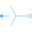
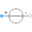
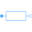
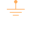

EddyCurrentLossesComparison of equivalent circuits of eddy current loss models |
|
Diagram
{kind=link}
Information
This information is part of the Modelica Standard Library maintained by the Modelica Association.
In this example the eddy current losses are implemented in two different ways. Compare the loss dissipation powerb_e.power and powerb_m.power of the two models indicated by power meters.
Parameters (4)
| R |
Value: 0.1 Type: Resistance (Ω) Description: Resistance |
|---|---|
| Gc |
Value: 0.0001 Type: Conductance (S) Description: Loss conductance |
| R_m |
Value: 1 Type: Reluctance (H⁻¹) Description: Reluctance of the magnetic circuit |
| N |
Value: 1 Type: Real Description: Number of turns |
Outputs (2)
Components (18)
| ground_e |
Type: Ground |
|
|---|---|---|
| ground_m |
Type: Ground |
|
|  | star_e |
Type: Star |
| star_m |
Type: Star |
|
|  | sineVoltage_e |
Type: VoltageSource |
| sineVoltage_m |
Type: VoltageSource |
|
|  | resistor_e |
Type: Resistor |
| resistor_m |
Type: Resistor |
|
| powerb_e |
Type: PowerSensor |
|
| powerb_m |
Type: PowerSensor |
|
| loss_e |
Type: Conductor |
|
| converter_e | ||
| converter_m | ||
| loss_m |
Type: EddyCurrent |
|
| reluctance_e |
Type: Reluctance |
|
| reluctance_m |
Type: Reluctance |
|
|  | mground_e |
Type: Ground |
| mground_m |
Type: Ground |